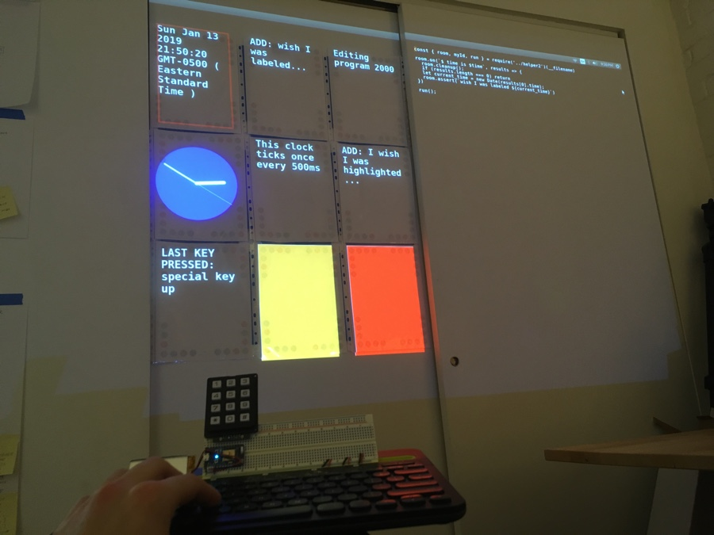
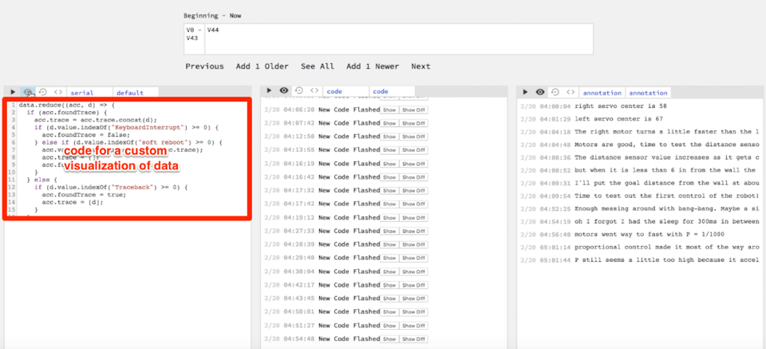
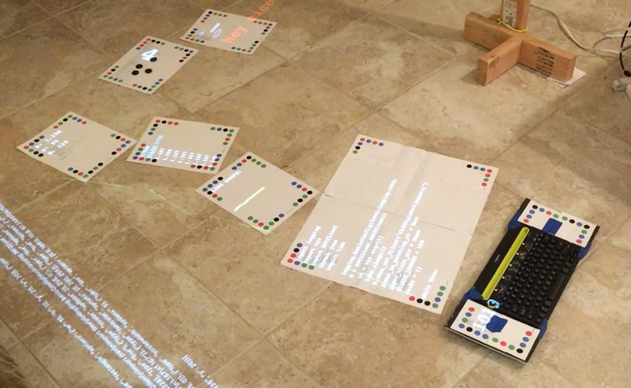

January 20, 2019
Previously, I was working on tools to tell a more complete story of the making process and tools for seeing live data. But I heard of Dynamicland and thought it addressed some limitations of the tools I had worked on.
Dynamicland is a communal computer, designed for agency, not apps, where people can think like whole humans. Dynamicland puts the computer into the room instead in a tiny box of pixels. In my seeing tools, it felt wrong to put a tool meant to help people see on a screen when the primary work was going on in the room. Also I wondered how people would make custom visualizations. I have a background in data visualization so I could quickly write code to make a custom graph of data but generally this would be challenging. There was a bad jump in complexity and knowledge if you wanted to extend the system. I was inspired by Dynamicland's generic programming model made it equally easy to make graphics, robots, and improve the system itself.
 A tiny text editor inside of premade visualizations in my previous project the Robot "Seeing Tool"
I wanted to judge the merit of these ideas for myself but Dynamicland is a building in Oakland, CA where the physical building and the coding environment are one in the same. Dynamicland is not an app that can be downloaded and run in a new space. A new space with new people should develop a system that works best for them.
I tried out a couple open-source projects related to "programmable spaces" — Paper Programs by JP Posma and Living Room by the Recurse Center. Both were impressively complete but I felt both were too closely tied to JavaScript and using a web browser. Programming was still done on a computer or in a web browser. I also felt both had too strong of a difference between the programs you could make with the system, and the system code itself.
Therefore, I started to make my own "programmable space" where everything in the system would be done in the room without needing to switch back to a traditional programming experience on a GUI operating system.
 An early prototype of a programmable space using a projector and camera. A text editor paper is editing a line graph paper. Other papers measure their angle or the number of tokens on them as an input to the line graph paper.
Initially I tried to use a Dynamicland-like setup with cameras and projectors pointing at papers with colored dots. Each paper was an independent program. Papers in the room would have code written on them. If the paper was out in the room, then anyone in the room could look at the paper and read what it does. Likewise, if the paper was out in the room then the cameras could see it (using the colored dots) and cause the paper's code to run. The one-to-one mapping between what people can see and what programs were running helps the system be understandable. Projectors would project the output of the programs on the paper as nonintrusive display. The "text editor" used to edit papers was itself another paper that edited the code of the paper it was pointing at. Programs communicate by writing and reading to a global "tuplespace" — I think of it as a whiteboard, just another object in the room. See the Appendix for more details about this and the code.
This setup worked but was hard to make reliable and keep physically rearranged. The cameras and projectors never felt invisible. The point of the programmable room was to forget about them like you forget about the lights in your ceiling. I was also spending too much time on the code to run the camera and projectors and not spending enough time on the thing I cared about - learning what it's like to work in a programmable room.
To refocus, I scaled back and made a limited but complete demo of a programmable room with a complete editing experience outside a traditional GUI OS.
The room had an always on text-editor and a grid of 9 editable programs. The papers were fixed on the wall so I avoided needing a camera to detect papers. The fixed papers also made the projector easy to set up. Having 9 pre-made programs avoided the issue of updating and creating the physical papers.
After playing around for a few days, I discovered that the room did give promising looking at what it would be like to have a programmable room.
But some limitations hurt the experience:
I'll be looking for ways to address these limitations while keeping the setup as simple as possible. If you have thoughts or questions, feel free to email or reach out to me on Twitter.
Programs interact by:
Below I describe most of programs that bootstrap this programmable room demo, including the programs I made while playing in the room.
Broker:
Boot programs:
Inputs:
Editable programs that extend the language:
Basic use of extended language:
Programs that use the inputs:
Text editor:
The text editor is a prime example of how the system is bootstrapped. It is not a program that itself manages a GUI window or directly listens to keyboard events. It simply uses existing claims and wishes that certain things would happen. Its ~200 lines of code are close to minimum viable description of what a "text editor" does. Because the editor itself is within the system you can improve the editing experience using the editor itself. The concept of a"text editor" also takes on a new meaning not as something that is given to you but a set of capabilities that could be achieved in many ways through any program that makes the appropriate claims.
Programs that use the claim about time: